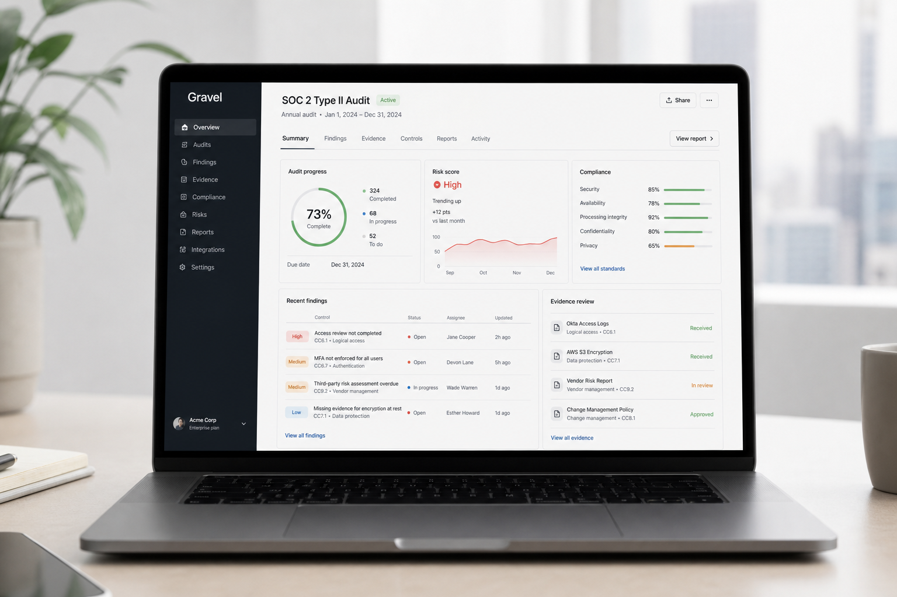

Local scans
Run audits against your project without uploading source code to the web app.
Local-first audit CLI + web analytics
Download the CLI, connect it to your account, and get one completed project run free. Upgrade when your team is ready for repeat audits.

Product
Run audits against your project without uploading source code to the web app.
Track runs, completion status, findings severity, and plan usage from the dashboard.
One completed run is free. RevenueCat entitlements unlock repeat project audits.
Workflow
Sign in, download the CLI tarball, approve the browser login, then run audits from your terminal. Gravel records progress and results in your analytics dashboard.
Release notes
Disconnect linked CLI devices from the dashboard and revoke new device-scoped tokens.
Download Markdown and JSON analytics reports with run history, severities, and findings.
Completed CLI scans append a local gravel-run-history.md file in the audited project.
Pricing
$0
For validating one project audit run.
$149/mo
For teams running repeat audits across active SaaS projects.
Custom
For custom controls, procurement, and deployment needs.